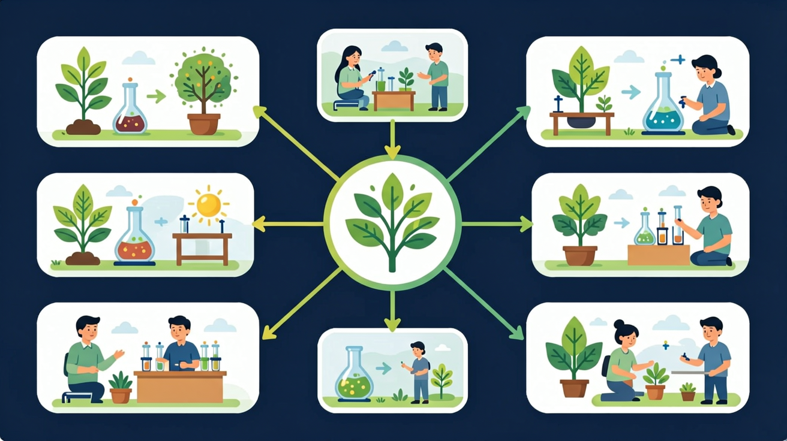

花园里有花、有石头、有小虫子、有水……哪些有生命？哪些没有生命？

🎯 能说出生物的基本特征（如生长、繁殖等）
🎯 能判断常见物体是否属于生物并说明理由
🎯 能分析特殊案例（如病毒、机器人）的生物属性
❓ 为什么说教室里的盆栽是生物，而塑料花不是？
❓ 机器人会动会说话，为啥不算生物呢？
❓ 水母没有大脑，为啥还属于生物？
学完这一课，这些问题你都能自信地回答。
下列属于生物的是？
生物最基本的特征是？
花园里有好多东西——绿色的叶子、五颜六色的花、爬来爬去的小虫子、透明的水、坚硬的石头……我们每天都能看到这些东西。
但是——它们都是一样的吗？有的会长大，有的永远不变；有的需要吃东西，有的什么也不需要；有的会生小宝宝，有的永远只是那一个。它们到底有什么不同？
所以，今天我们就来探索：什么是生物？什么是非生物？找出有生命和没有生命的东西，认识生物的5大特征，再来一场12项分类大挑战！
小种子会变成大树；婴儿会长成大人。生物能自己变大变强。
🌰 举例：种子→幼苗→大树
动物吸气呼气；植物白天吸收二氧化碳，晚上吸收氧气。生物都需要气体交换。
🐶 举例：狗呼气、鱼用鳃吸水
动物要吃食物；植物要喝水、晒太阳（光合作用）。没有营养就无法生存。
🌻 举例：向日葵追着太阳转
生物能生出下一代。鸟产卵、猫生小猫、植物开花结果产种子。
🐣 举例：鸟蛋→小鸟
碰到危险会逃跑；含羞草被碰会收叶；眼睛遇到强光会眯起来。
🌿 举例：含羞草被触碰合叶
生 呼 养 繁 应
生长·呼吸·营养·繁殖·对刺激有反应
五个特征缺一不可！
石头是岩石风化而成，不能生长，不需要食物，也不能繁殖。哪怕放一百年也是那块石头。
水是非生物，但生物离不开水。水对生命非常重要，但水本身不是生命。
空气是混合气体（主要是氮气和氧气）。动物靠空气呼吸，但空气本身是非生物。
土壤提供矿物质供植物生长，但土壤本身（矿物颗粒+有机质）是非生物。
火会动、会"变大"，但它不能繁殖、没有细胞、不需要营养（只需要燃料+氧气+热量）。
❌ 不能繁殖 · 没有细胞 · 不会自主生长
珊瑚看起来像石头，但珊瑚是由无数珊瑚虫组成的！珊瑚虫是动物，能生长、繁殖、呼吸。
✅ 有细胞 · 能生长 · 可以繁殖
病毒太小了！它有遗传物质（DNA或RNA），但不能独立代谢，必须寄生在活细胞里才能复制。科学家们还在讨论呢！
❓ 进阶知识·目前无定论
死去的生物不再具有生命特征，就变成了非生物。枯叶从树上掉下来就不再有生命了。
💡 曾经是生物，现在是非生物
🖱️ 拖动下方物品到对应区域 · 松手即可放置 · 点击已放置的物品可移回
22秒动态动画 · 5场景：标题→生物特征→非生物→易错案例→总结 · 支持暂停回看
每题选择一个最佳答案，答完立即看解析
完成各个环节解锁专属徽章 · 收集全部成就！